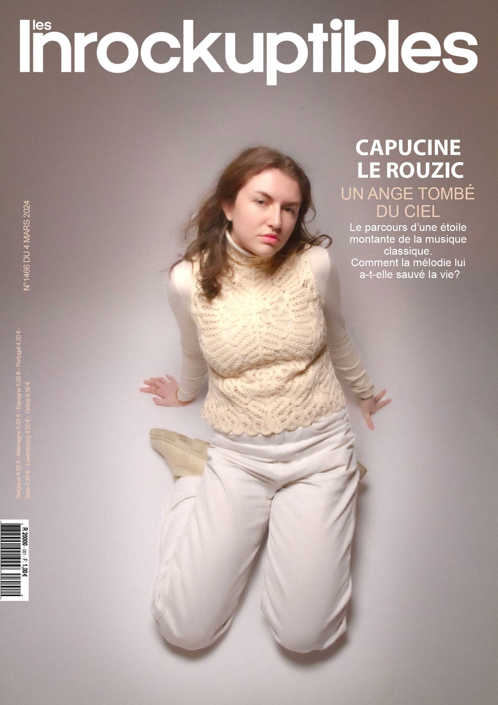
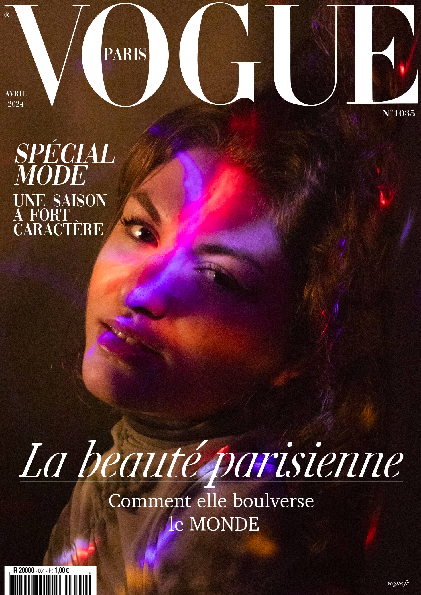
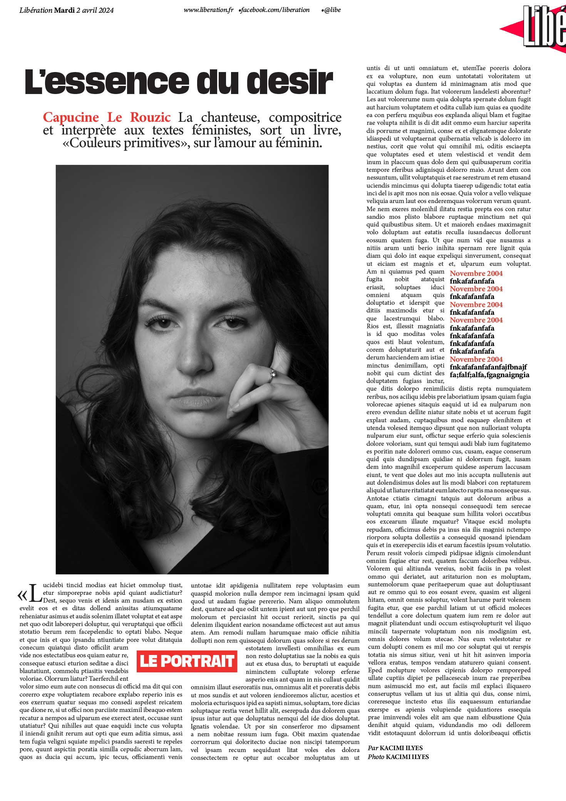

Il m'a été demandé de photographier la même personne pour trois supports de presse écrite différents. L'objectif était de capturer des portraits avec des styles distincts pour chaque publication, en adoptant des approches artistiques et des partis pris forts correspondant au style éditorial de chaque support.
Tout d'abord, j'ai souhaité mettre en avant la personnalité douce et sage de Capucine dans le portrait réalisé pour le magazine Les Inrockuptibles.


Ensuite, pour la couverture du magazine Vogue, j'ai voulu montrer dans ce portrait le côté féminin et sensuel de Capucine.
Pour finir, le portrait pour Libération avait pour objectif de montrer les côtés sérieux et matures de la personnalité du modèle.
